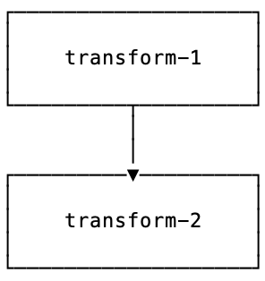

Introduction
Why PADL?
For data scientists, developing neural models is hard, due to the need to juggle diverse tasks such as preprocessing, Pytorch layers, loss functions and postprocessing, as well as maintainance of config files, code bases and communicating results between teams. PADL is a tool to alleviate several aspects of this work.
Problem Statement
While developing and deploying our deep learning models in Pytorch we found that important design decisions and even data-dependent hyper-parameters took place not just in the forward passes/ modules but also in the pre-processing and post-processing. For example:
in NLP the exact steps and objects necessary to convert a sentence to a tensor
in neural translation the details of beam search post-processing and filtering based on business logic
in vision applications, the normalization constants applied to image tensors
in classification the label lookup dictionaries, formatting the tensor to human readable output
In terms of the functional mental model for deep learning we typically enjoy working with, these steps constitute key initial and end nodes on the computation graph which is executed for each model forward or backward pass.
Standard Approach
The standard approach to deal with these steps is to maintain a library of routines for these software components and log with the model or in code which functions are necessary to deploy and use the model. This approach has several drawbacks.
A complex versioning problem is created in which each model may require a different version of this library. This means that models using different versions cannot be served side-by-side.
To import and use the correct pre and post processing is a laborious process when working interactively (as data scientists are accustomed to doing)
It is difficult to create exciting variants of a model based on slightly different pre and postprocessing without first going through the steps to modify the library in a git branch or similar
There is no easy way to robustly save and inspect the results of “quick and dirty” experimentation in, for example, jupyter notebooks. This way of operating is a major workhorse of a data-scientists’ daily routine.
PADL Solutions
In creating PADL we aimed to create:
A beautiful functional API including all mission critical computational steps in a single formalism – pre-processing, post-processing, forward pass, batching and inference modes.
An intuitive serialization/ saving routine, yielding nicely formatted output, saved weights and necessary data blobs which allows for easily comprehensible and reproducible results even after creating a model in a highly experimental, “notebook” fashion.
An “interactive” or “notebook-friendly” philosophy, with print statements and model inspection designed with a view to applying and viewing the models, and inspecting model outputs.
With PADL it’s easy to maintain a single pipeline object for each experiment which includes postprocessing, forward pass and posprocessing, based on the central Transform abstraction. When the time comes to inspect previous results, simply load that object and inspect the model topology and outputs interactively in a Jupyter or IPython session. When moving to production, simply load the entire pipeline into the serving environment or app, without needing to maintain disparate libraries for the various model components. If the experiment needs to be reproduced down the line, then simply re-execute the experiment by pointing the training function to the saved model output.
Installation
pip install padl
Project Structure
PADL’s chief abstraction is padl.transforms.Transform. This is an abstraction which includes all elements of a typical deep learning workflow in Pytorch:
preprocessing
data-loading
batching
forward passes in Pytorch
postprocessing
Pytorch loss functions
Loosely it can be thought of as a computational block with full support for Pytorch dynamical graphs and with the possibility to recursively combine blocks into larger blocks.
Here’s an example of what this might like:

The schematic represents a model which is a Transform instance with multiple steps and component parts; each of these are also Transform instances. The model may be applied in one pass to single data points, or to batches of data.
Basic Usage
Defining atomic transforms
Imports:
from padl import this, transform, batch, unbatch, value
import torch
Transform definition using transform decorator:
@transform
def split_string(x):
return x.split()
@transform
def to_tensor(x):
x = x[:10][:]
for _ in range(10 - len(x)):
x.append(EOS_VALUE)
return torch.tensor(x)
Any callable class implementing __call__ can also become a transform:
@transform
class ToInteger:
def __init__(self, words):
self.words = words + ['</s>']
self.dictionary = dict(zip(self.words, range(len(self.words))))
def __call__(self, word):
if not word in self.dictionary:
word = "<unk>"
return self.dictionary[word]
to_integer = ToInteger('-', ' ')
transform also supports inline lambda functions as transforms:
split_string = transform(lambda x: x.split())
this yields inline transforms which reflexively reference object methods:
left_shift = this[:, :-1]
lower_case = this.lower_case()
Pytorch layers are first class citizens via padl.transforms.TorchModuleTransform:
@transform
class LM(torch.nn.Module):
def __init__(self, n_words):
super().__init__()
self.rnn = torch.nn.GRU(64, 512, 2, batch_first=True)
self.embed = torch.nn.Embedding(n_words, 64)
self.project = torch.nn.Linear(512, n_words)
def forward(self, x):
output = self.rnn(self.embed(x))[0]
return self.project(output)
model = LM(N_WORDS)
print(isinstance(layer, torch.nn.Module)) # prints "True"
print(isinstance(layer, padl.transforms.Transform)) # prints "True"
Finally, it’s possibly to instantiate a module as a Transform:
normalize = transform(torchvision).transforms.Normalize(*args, **kwargs)
cosine = transform(numpy).cos
print(isinstance(normalize, padl.transforms.Transform)) # prints "True"
print(isinstance(cosine, padl.transforms.Transform)) # prints "True"
Defining compound transforms
Atomic transforms may be combined using 3 functional primitives:
Transform composition: compose

s = transform_1 >> transform_2
Applying a single transform over multiple inputs: map

s = ~ transform
Applying transforms in parallel to multiple inputs: parallel

s = transform_1 / transform_2
Applying multiple transforms to a single input: rollout

s = transform_1 + transform_2
Large transforms may be built in terms of combinations of these operations. For example the branching example above would be implemented by:
preprocess = (
lower_case
>> clean
>> tokenize
>> ~ to_integer
>> to_tensor
>> batch
)
forward_pass = (
left_shift
>> IfTrain(word_dropout)
>> model
)
train_model = (
(preprocess >> model >> left_shift)
+ (preprocess >> right_shift)
) >> loss
Decomposing models
Often it is instructive to look at slices of a model – this helps with e.g. checking intermediate computations:
preprocess[:3]
Individual components may be obtained using indexing:
step_1 = model[1]
Naming transforms inside models
Component Transform instances may be named inline:
s = (transform_1 - 'a') / (transform_2 - 'b')
These components may then be referenced using __getitem__:
print(s['a'] == s[0]) # prints "True"
Applying transforms to data
To pass single data points may be passed through the transform:
prediction = t.infer_apply('the cat sat on the mat .')
To pass data points in batches but no gradients:
for x in t.eval_apply(
['the cat sat on the mat', 'the dog sh...', 'the man stepped in th...', 'the man kic...'],
batch_size=2,
num_workers=2,
):
...
To pass data points in batches but with gradients:
for x in t.train_apply(
['the cat sat on the mat', 'the dog sh...', 'the man stepped in th...', 'the man kic...'],
batch_size=2,
num_workers=2,
):
...
Model training
Important methods such as all model parameters are accessible via Transform.pd_*.:
o = torch.optim.Adam(model.pd_parameters(), lr=LR)
For a model which emits a tensor scalar, training is super straightforward using standard torch functionality:
for loss in model.train_apply(TRAIN_DATA, batch_size=BATCH_SIZE, num_workers=NUM_WORKERS):
o.zero_grad()
loss.backward()
o.step()
Saving/ Loading
Saving:
model.pd_save('test.padl')
Loading:
from padl import load
model = load('test.padl')
For the full notebook see notebooks/02_nlp_example.ipynb in the GitHub project.
Licensing
PADL is licensed under the Apache License, Version 2.0. See LICENSE for the full license text.